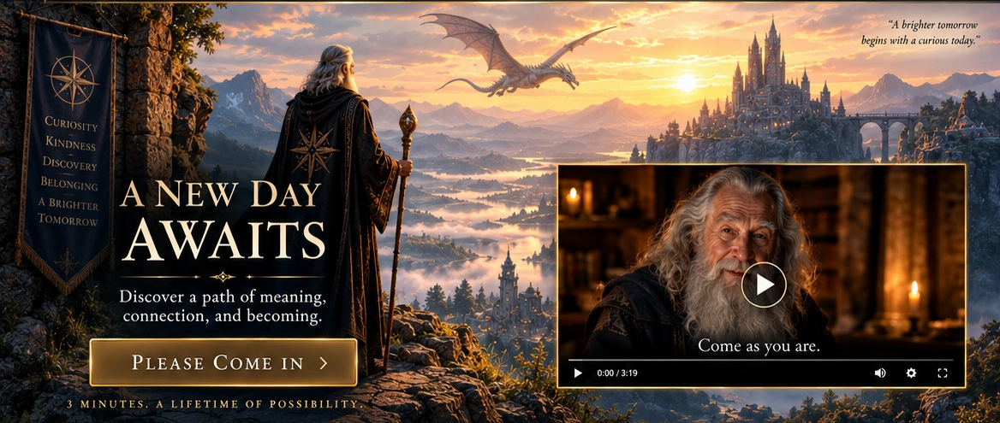
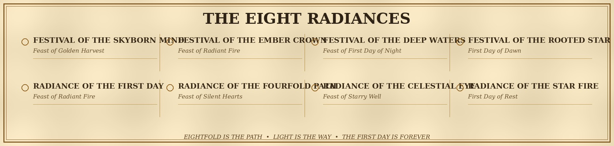
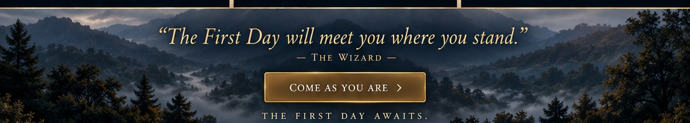

THE EIGHT RADIANCES
The sacred cycle of the First Day is carried through four great festivals and four radiant feasts: Skyborn Mind, Ember Crown, Deep Waters, Rooted Star, First Day, Fourfold Path, Celestial Eye, and Star Fire.
EXPLORE THE WHEEL →
The Teachings
Practical wisdom for everyday life. This section is ready for the church's teachings and books.
Begin Your Journey
You don't need all the answers. You only need the willingness to begin.
Find Your Community
We learn and grow together. This will become the church community and gathering area.